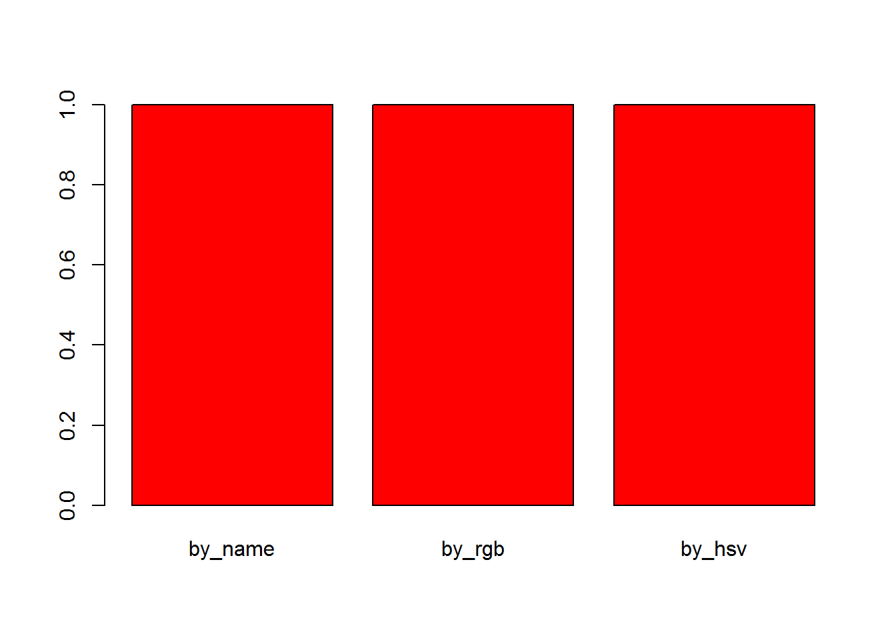

5 R/Bioconductor介绍
5.1 安装R包
5.1.1 CRAN
The Comprehensive R Archive Network CRAN 是最大的R包库。除了成功build和安装之外，对上传R包要求很少，因此文档和相关支持通常很少，弄清楚如何使用这些R包本身成为一个挑战。CRAN是R搜索安装R包的默认库：
5.1.2 Github
Github 并不特定于R，任何状态的任何类型的代码都可以上传。但无法保证上传到github的软件包可以安装，也不保证它声称做的事情。可以使用上述安装的“devtools”软件包直接从github下载和安装R软件包。
Github同时也是一个版本控制系统，可以存储任何软件包的多个版本。默认情况下，会安装最新的“master”版本的软件包。如果您想使用旧版本或开发分支，可以使用“ref”参数指定：
# different branch
devtools::install_github("tallulandrews/M3D", ref="nbumi")
# previous commit
devtools::install_github("tallulandrews/M3Drop", ref="434d2da28254acc8de4940c1dc3907ac72973135")注意: 确保重新安装M3Drop master分支以便后续课堂使用。
5.1.3 Bioconductor
Bioconductor是专门用于生物分析的R包库。它对提交有最严格的要求，包括在各平台上安装，以及完整的文档和教程（称为vignette），解释如何使用包。Bioconductor还鼓励使用标准数据结构/类。
注意: 某些情况下有必要将上述的“http://” 替换为 “https://” ,这取决于网络连接的安全属性。
Bioconductor还要求作者维护他们的R包，并定期6个月发布更新。 在尝试安装课程所需R包之前，请确保使用最新版本的bioconductor。
5.1.4 源码安装
安装包的最后一种方法是直接从源码安装。 在这种情况下，必须下载完整构建的源代码文件，通常是packagename.tar.gz，或克隆github仓并重新build软件包。通常，只有在编辑包或者由于某种原因前一种方法失败时才会这样做。
5.2 安装说明:
本课程所需的所有软件包都可以在这里获得。从“RUN Rscript -e”install.packages(‘devtools’)" “开始，在命令行或者R session运行引号内的命令(移除”RUN")。注意，某些情况下安装顺序也很重要，请确保按顺序执行。
5.3 数据类型/类
R是一种高级语言，因此底层数据类型通常并不重要。 如果您使用其他语言（如C）直接访问R数据，则需要考虑，但这超出了本课程的范围。 相反，我们将考虑基本数据类型：数值(numeric)，整数(integer)，逻辑(logical)和字符(character)，以及高级数据类“因子”。 使用“class（）”函数检查数据的类型。
除此之外：R还可以将数据存储为“复数(complex)”，但通常这与生物分析无关。
5.3.1 数值
“数值”类型是存储任何数值数据的默认类 - 整数，十进制数，科学计数法中的数字等…
## [1] "numeric"## [1] "numeric"## [1] "numeric"即使R有一个“整数”类型，42可以更有效地存储为整数，默认是将其存储为“数值”类型。 如果我们想要将42存储为整数，我们必须强制类型转换：
## [1] "integer"强制R将数据存储为特定类，如果我们的数据与该类不兼容，它仍将执行此操作，但数据将转换为NA：
## Warning: 强制改变过程中产生了NA## [1] NA上述将“字符”数据强制转换为无意义的数值，因此触发（“抛出”）警告消息。 由于这只是一个警告信息，R将继续执行脚本/函数中的后续命令，而“错误”将导致R停止执行。
5.3.2 字符/字符串
“character”类型存储各种文本数据。 编程约定将包含多个字母的数据称为“字符串”，因此大多数作用于字符数据的R函数将数据称为“字符串”，并且通常在其名称中包含“str”或“string”。字符串通过双引号标识，而变量/函数名称则不是：
## [1] "x"## [1] 5除了标准的字母数字字符外，字符串还可以存储各种特殊字符。 特殊字符后跟单个字符进行标识，最常见的是tab的特殊字符：\t和换行符：\n。 为了演示这些特殊字符，用特殊字符将两个字符串连接起来：
## Hello World## Hello World## Hello
## World注意：特殊字符在不同函数中工作方式不同。比如paste函数和cat函数功能相同，但是不识别特殊字符。
## [1] "Hello World"## [1] "Hello\tWorld"## [1] "Hello\nWorld"单反斜杠或双反斜杠也用作转义字符来关闭特殊字符功能或允许引号包含在字符串中：
## This "string" contains quotation marks.特殊字符通常仅用于模式匹配，以及将数据读取/写入文件 例如，将tab分隔文件读入R。
另一种特殊类型的字符数据是颜色。 颜色可以通过三种主要方式指定：名字，使用rgb功能的红色，绿色，蓝色值以及使用hsv函数的色调，饱和度和亮度。 默认情况下，rgb和hsvs三个值在0-1之间，透明度可选的第四个值。或者，可以从许多不同的包中加载预定颜色组，其中RColorBrewer是最受欢迎的一种。
## [1] "red" "#FF0000" "#FF0000"
5.3.3 逻辑值
logical类型存储布尔值，即TRUE和FALSE。它用于存储逻辑运算的结果，条件语句将被强制转换为此类。 大多数其他数据类型可以强制转换为布尔值而不会触发（或“抛出”）错误消息，但这可能会导致意料之外的情况。
## [1] "logical"## [1] TRUE## [1] TRUE## [1] "logical"## [1] FALSE## [1] FALSE练习1 试验其他字符和数值，其中哪些被强制为TRUE或FALSE？哪些都不是？ 有没有抛出警告/错误信息？
5.3.4 因子
字符串/字符数据存储效率非常低，每个字母通常需要与整数相同的内存。 因此，当存储具有重复元素的字符串向量时，更有效的方式是将每个元素分配给整数，将向量存储为整数和字符串到整数关联表。 因此，默认情况下，R将读取数据表的文本列作为因子。
str_vector = c("Apple", "Apple", "Banana", "Banana", "Banana", "Carrot", "Carrot", "Apple", "Banana")
factored_vector = factor(str_vector)
factored_vector## [1] Apple Apple Banana Banana Banana Carrot Carrot Apple Banana
## Levels: Apple Banana Carrot## [1] 1 1 2 2 2 3 3 1 2因子的双重性质可能导致一些不直观的行为。例如，连接两个因子会将它们转换为数字形式，丢失原始字符串。
## [1] 1 1 2 2 2 3 3 1 2 1 1 2 2 2 3 3 1 2同样，如果由于格式化问题，数值数据被错误地解释为字符串，那么在强制转换为数值之前必须将因子转换回字符串：
## [1] 1 3 2 5 1 6 3 4## [1] 20 25 23 38 20 40 25 30要使R读取文本作为字符数据而不是因子，在每个R会话开始s时，设置环境选项stringsAsFactors = FALSE。
练习
使用因子为任意长的水果矢量创建一个颜色矢量，如上面的’str_vector`？ 答案
5.3.5 检查数据类型
建议在读取文件后检查数类型据是否正确：
## [1] TRUE## [1] FALSE## [1] FALSE## [1] FALSE5.4 基本数据结构
到目前为止，我们只关注单个值和向量。向量是R中最简单的数据结构。它们是所有相同类型数据的一维数组。 如果创建向量时的输入具有不同类型，则它将被强制转换为与数据最一致的数据类型。
## [1] "Hello" "5" "TRUE"## [1] "character"在这里，尝试将字符，数值和逻辑数据放入单个向量中，所有值强制转换为character数据。
矩阵是二维向量，它也要求所有数据都是相同的类型。
如果将字符向量和数字向量组合成矩阵，所有数据都将被强制转换为字符类型：
## [1] "character"## [1] "numeric"## x y
## [1,] "A" "1"
## [2,] "B" "2"
## [3,] "C" "3"引号表示数字向量已被强制转换为字符类型。或者，使用数据框用不同数据类型的列存储数据。
## x y
## 1 A 1
## 2 B 2
## 3 C 3## [1] "character"## [1] "numeric"如果已经设置stringsAsFactors = FALSE，会发现第一列仍然是字类型符，否则它将自动转换为因子。
## [1] "factor"矩阵和数据框之间的另一个区别是能够使用$运算符选择列：
最后的基本数据结构是list。列表允许将不同类型和不同长度的数据存储在单个对象中。 列表的每个元素可以是任何其他R对象：任何类型的数据，任何数据结构，甚至其他列表或函数。
l = list(m, z)
ll = list(sublist=l, a_matrix=m, numeric_value=42, this_string="Hello World", even_a_function=cbind)
ll## $sublist
## $sublist[[1]]
## x y
## [1,] "A" "1"
## [2,] "B" "2"
## [3,] "C" "3"
##
## $sublist[[2]]
## x y
## 1 A 1
## 2 B 2
## 3 C 3
##
##
## $a_matrix
## x y
## [1,] "A" "1"
## [2,] "B" "2"
## [3,] "C" "3"
##
## $numeric_value
## [1] 42
##
## $this_string
## [1] "Hello World"
##
## $even_a_function
## function (..., deparse.level = 1)
## .Internal(cbind(deparse.level, ...))
## <bytecode: 0x00000000082cbfa8>
## <environment: namespace:base>列表最常用于从不适合任何先前数据结构的函数返回大量结果时。
5.5 更多信息
通过在交互式会话中键入?function，可以获得这些数据类型相关的R命令的更多信息。
5.6 数据类型
5.6.1 什么是整洁的数据
整洁的数据主要是Hadley Wickham (Wickham 2014)定义的概念。整洁的数据具有以下三个特征：
- 每个变量都有自己的列;
- 每个观测都有自己的行;
- 每个值都有自己的单元格。
以下是一些整洁数据的示例：
## Students Subject Years Score
## 1 Mark Maths 1 5
## 2 Jane Biology 2 6
## 3 Mohammed Physics 3 4
## 4 Tom Maths 2 7
## 5 Celia Computing 3 9以下是一些不整洁数据的示例：
## Students Sport Category Counts
## 1 Matt Tennis Wins 0
## 2 Matt Tennis Losses 1
## 3 Ellie Rugby Wins 3
## 4 Ellie Rugby Losses 2
## 5 Tim Football Wins 1
## 6 Tim Football Losses 4
## 7 Louise Swimming Wins 2
## 8 Louise Swimming Losses 2
## 9 Kelly Running Wins 5
## 10 Kelly Running Losses 1任务1：不整洁的数据在哪些方面不整洁？ z怎么整理数据？
整洁的数据通常比不整齐的数据更容易使用，特别是使用ggplot等软件包。 幸运的是，可以使用软件包来整理不整洁的数据。 今天将探讨tidyr包中一些整理数据的函数。如果有兴趣了解有关整理数据的更多信息，建议阅读Garrett Grolemund和Hadley Wickham撰写的“R for Data Science”。 电子版可在此处获取：http://r4ds.had.co.nz/
上面不整洁的数据因为两个变量（Wins和Lossses）存储在一列（Category）中。这是数据不整洁的常见方式。 为了整理这些数据，我们需要将Wins和Lossses分成两列，并将Counts中的值拆分到这两列。 幸运的是，tidyverse包中有一个函数来执行此操作。spread有两个参数，key和value。 将包含多个变量的列的名称传递给key，并将包含多个变量值的列的名称传递给value。 例如：
library(tidyverse)
sports<-data.frame(Students=c("Matt", "Matt", "Ellie", "Ellie", "Tim", "Tim", "Louise", "Louise", "Kelly", "Kelly"), Sport=c("Tennis","Tennis", "Rugby", "Rugby","Football", "Football","Swimming","Swimming", "Running", "Running"), Category=c("Wins", "Losses", "Wins", "Losses", "Wins", "Losses", "Wins", "Losses", "Wins", "Losses"), Counts=c(0,1,3,2,1,4,2,2,5,1))
sports## Students Sport Category Counts
## 1 Matt Tennis Wins 0
## 2 Matt Tennis Losses 1
## 3 Ellie Rugby Wins 3
## 4 Ellie Rugby Losses 2
## 5 Tim Football Wins 1
## 6 Tim Football Losses 4
## 7 Louise Swimming Wins 2
## 8 Louise Swimming Losses 2
## 9 Kelly Running Wins 5
## 10 Kelly Running Losses 1## Students Sport Losses Wins
## 1 Ellie Rugby 2 3
## 2 Kelly Running 1 5
## 3 Louise Swimming 2 2
## 4 Matt Tennis 1 0
## 5 Tim Football 4 1任务2：下面定义的数据框foods不是整洁的数据，找出不整洁的原因并用spread()整理数据。
数据不整洁的另一种常见方式为列是值而不是变量。例如，下面的数据框显示了一些学生在5月和6月的测试中获得的分数。 数据不整洁，因为“May”和“June”列是值，而不是变量。
tidyverse包中有一个函数来处理这种问题。gather()获取列为值的名称，key和value作为参数。 key是变量的名称，值为列名，value是变量的名称，其值分布在多个列上。即：
## student Month Percentage
## 1 Alejandro May 90
## 2 Pietro May 12
## 3 Jane May 45
## 4 Alejandro June 80
## 5 Pietro June 30
## 6 Jane June 100这些例子与scRNA-seq分析没有多大关系，但旨在帮助说明整洁和不整洁数据的特征。 如果数据以整齐的格式存储，会发现分析单细胞RNA-seq数据要容易得多。通常鼓励以整齐的方式存储数据促进单细胞RNA-seq分析。
5.6.2 什么是Rich data?
如果你谷歌“Rich datga”，会发现这个术语有很多不同的定义。在本课程中，我们将使用“Rich data”来表示通过整合多个来源的信息生成的数据。例如，在R中创建一个对象来生成Rich data，该对象包含scRNA-seq实验中细胞的基因表达矩阵，还有关于如何进行实验的信息。 下面讨论的SingleCellExperiment类的对象是Rich data的一个例子。
5.7 Bioconductor, SingleCellExperiment 和 scater
5.7.1 Bioconductor
来自Wikipedia: Bioconductor是一个免费的，开源的开放式开发软件项目，用于分析和理解湿实验室产生的基因组数据。Bioconductor主要基于统计R编程语言，但也包含其他编程语言的贡献。 它每年有两个版本，伴随R的半年一个版本。在任何时候都存在一个发布版本，它对应于R的发布版本，以及一个开发版本，它对应于R的开发版本。大多数用户可以找到适合他们需求的发布版本。
我们强烈建议所有新成员，甚至经验丰富的高通量数据分析师使用Bioconductor方法和类。
5.7.2 SingleCellExperiment 类
SingleCellExperiment(SCE)是用于存储单细胞实验数据的S4类。 这包括存储和检索spike-in信息，细胞的降维坐标和尺寸因子，以及基因和文库的常用元数据。
可以使用其构造函数创建此类的对象：
library(SingleCellExperiment)
counts <- matrix(rpois(100, lambda = 10), ncol=10, nrow=10)
rownames(counts) <- paste("gene", 1:10, sep = "")
colnames(counts) <- paste("cell", 1:10, sep = "")
sce <- SingleCellExperiment(
assays = list(counts = counts),
rowData = data.frame(gene_names = paste("gene_name", 1:10, sep = "")),
colData = data.frame(cell_names = paste("cell_name", 1:10, sep = ""))
)
sce## class: SingleCellExperiment
## dim: 10 10
## metadata(0):
## assays(1): counts
## rownames(10): gene1 gene2 ... gene9 gene10
## rowData names(1): gene_names
## colnames(10): cell1 cell2 ... cell9 cell10
## colData names(1): cell_names
## reducedDimNames(0):
## spikeNames(0):SingleCellExperiment中, 用户可以为实验条目指定任意名称。 为了协助软件包之间的互操作性，作者提供了针对特定类型数据的名称的一些建议：
- counts: 原始count数据，比如特定基因或转录本的reads数目;
- normcounts: 标准化的值与原始counts具有相同的尺度。比如，counts除以细胞特异尺寸因子;
- logcounts: 对数转换counts或类似counts的值。在大多数情况下，这被定义为对数转换的标准值，例如使用log2(count+1);
- cpm: Counts-per-million，\(CPM=A*10^6/mappedreads\), A为比对到某基因的reads数（read count）;
- tpm: Transcripts-per-million。\(TPM_i=(N_i/L_i)*10^6/sum(N_i/L_i+……..+ N_m/L_m)\). Ni：mapping到基因i上的read数； Li：基因i的外显子长度的总和.
上述建议命名都有其getter/setter方法，方便操作SingleCellExperiment。比如，可以将counts标准化并赋值给normcounts：
## class: SingleCellExperiment
## dim: 10 10
## metadata(0):
## assays(2): counts normcounts
## rownames(10): gene1 gene2 ... gene9 gene10
## rowData names(1): gene_names
## colnames(10): cell1 cell2 ... cell9 cell10
## colData names(1): cell_names
## reducedDimNames(0):
## spikeNames(0):## [1] 10 10## cell1 cell2 cell3 cell4 cell5 cell6 cell7
## gene1 3.169925 3.169925 2.000000 2.584963 2.584963 3.321928 3.584963
## gene2 3.459432 1.584963 3.584963 3.807355 3.700440 3.700440 3.000000
## gene3 3.000000 3.169925 3.807355 3.169925 3.321928 3.321928 3.321928
## gene4 3.584963 3.459432 3.000000 3.807355 3.700440 3.700440 3.700440
## gene5 3.906891 3.000000 3.169925 3.321928 3.584963 3.459432 3.807355
## gene6 3.700440 3.700440 3.584963 4.000000 3.169925 3.000000 3.459432
## cell8 cell9 cell10
## gene1 3.321928 3.807355 2.807355
## gene2 3.807355 3.700440 4.000000
## gene3 2.584963 4.000000 3.700440
## gene4 3.169925 3.584963 3.700440
## gene5 3.807355 2.584963 3.584963
## gene6 3.321928 3.459432 4.0000005.7.3 scater 包
scater是用于scRNA-seq分析的R包(McCarthy et al. 2017)。
其包括下游分析前的质量控制，可视化和预处理等方法。
scater具有以下功能：
- 自动计算QC指标
- 定量来自pseudo-alignment read数据转录本
- 数据格式标准化
- 丰富的探索性分析可视化
- 无缝集成到Bioconductor环境
- 简单的规范化方法
建议对所有scRNA-seq分析使用scater，而scater是课程第一部分的基础。
如下图所示，scater在比对后对表达矩阵进行质量控制，过滤和标准化。注意，此图为scater的原始版本，其中使用SCESet类。 在最新版本中，该图仍然适用，除了SCESet用SingleCellExperiment替代。</ span>

5.8 ggplot2介绍
5.8.1 ggplot2是什么?
ggplot2是由Hadley Wickham开发用于数据绘图的R软件包。在本实验中，我们将简要介绍该软件包的一些功能。 如果想了解更多关于如何使用ggplot2的信息，建议阅读Hadley Wickham撰写的“ggplot2 Elegant graphics for data analysis”。
5.8.2 ggplot2j原则
- ggplot2数据类型为数据框(dataframe)
- 使用
aes映射函数指定数据框中的变量如何映射到绘图上的要素 - 使用geoms指定数据在图表中的表示方式，例如，散点图，条形图，箱形图等。
5.8.3 使用aes映射函数
aes函数指定数据框中的变量如何映射到绘图上的元素。了解其工作原理，先看一个例子：
library(ggplot2)
library(tidyverse)
set.seed(1)
counts <- as.data.frame(matrix(rpois(100, lambda = 10), ncol=10, nrow=10))
Gene_ids <- paste("gene", 1:10, sep = "")
colnames(counts) <- paste("cell", 1:10, sep = "")
counts<-data.frame(Gene_ids, counts)
counts## Gene_ids cell1 cell2 cell3 cell4 cell5 cell6 cell7 cell8 cell9 cell10
## 1 gene1 8 8 3 5 5 9 11 9 13 6
## 2 gene2 10 2 11 13 12 12 7 13 12 15
## 3 gene3 7 8 13 8 9 9 9 5 15 12
## 4 gene4 11 10 7 13 12 12 12 8 11 12
## 5 gene5 14 7 8 9 11 10 13 13 5 11
## 6 gene6 12 12 11 15 8 7 10 9 10 15
## 7 gene7 11 11 14 11 11 5 9 13 13 7
## 8 gene8 9 12 9 8 6 14 7 12 12 10
## 9 gene9 14 12 11 7 10 10 8 14 7 10
## 10 gene10 11 10 9 7 11 16 8 7 7 4
最后一条命令，ggplot(data = counts，mapping = aes(x = cell1，y = cell2))，ggplot()初始化一个ggplot对象并接受参数data和mapping。 将counts数据框传递给data并使用aes()函数来指定将变量cell1用作x变量而将变量cell2用作y变量。
任务1：修改上述命令，初始化ggplot对象，其中cell10是x变量，cell8是y变量。
然而刚刚创建的图表信息量不大，因为它们上没有显示数据。要显示数据，我们需要使用geoms。
5.8.4 Geoms
使用geoms来指定希望数据在图表上显示的方式。例如，可以指定数据显示为散点图，条形图或箱形图。
下面是一个散点图的例子

可以看到，cell1和cell2中的基因表达之间似乎没有任何相关性。鉴于counts为随机生成数据，这并不令人奇怪。
任务2：修改上述命令创建折线图。提示：执行?ggplot查看帮助页面。底部是ggplot包索引的链接，滚动索引，直到找到geom选项。
5.8.5 绘制2个以上细胞的数据
到目前为止，我们一直在考虑数据框中2个细胞的基因counts。但是实际上数据框中有10个细胞，最好同时比较所有这些细胞的gene count会。如果同时绘制来自所有10个细胞的数据怎么办？
目前不能这样做，因为将每个单独的细胞视为变量并将该变量分配给x轴或y轴。 可以创建一个10维图来绘制来自所有10个细胞的数据，但这a)不能用ggplot实现和b)不容易解释。
可以整理数据，使用表示细胞ID的变量和表示基因counts的变量。
## Gene_ids Cell_ID Counts
## 1 gene1 cell1 8
## 2 gene2 cell1 10
## 3 gene3 cell1 7
## 4 gene4 cell1 11
## 5 gene5 cell1 14
## 6 gene6 cell1 12基本上，之前的问题是数据不整洁，变量（Cell_ID）分布在多列上。 现在解决了这个问题，更容易在一个图上绘制来自所有10个单元格的数据。

任务3：使用更新的counts数据框绘制条形图，其中Cell_ID为x变量，Counts为y变量。 提示：?geom_bar查看帮助文档。
任务4：使用更新的counts数据框绘制散点图，其中Gene_ids为x变量，Counts为y变量。
5.8.6 绘制热图
可视化基因表达数据的常用方法是使用热图，这里使用R包pheatmap来进行分析。
library(pheatmap)
set.seed(2)
test = matrix(rnorm(200), 20, 10)
test[1:10, seq(1, 10, 2)] = test[1:10, seq(1, 10, 2)] + 3
test[11:20, seq(2, 10, 2)] = test[11:20, seq(2, 10, 2)] + 2
test[15:20, seq(2, 10, 2)] = test[15:20, seq(2, 10, 2)] + 4
colnames(test) = paste("Cell", 1:10, sep = "")
rownames(test) = paste("Gene", 1:20, sep = "")
pheatmap(test)
上面热图每行代表一个基因，每列代表一个细胞。细胞中基因表达量用相应框的颜色表示。 例如，从该图中看出，基因18在细胞10中高表达，但在细胞1中低表达。
该图还提供了聚类结果的信息。通常，聚类算法旨在将数据点(比如细胞)拆分成cluster，其中cluster中点的相似性比cluster间的点相似性高。在图的顶部和左侧为层次聚类结果，可以看出，细胞4,8,2,6和10彼此更相似。
 现在可以看到这些基因分为两个簇 - Cluster1中8个基因在细胞2,10,6,4和8表达上调，Cluster2中12个基因在细胞2,10,6,4,8中表达下调。
现在可以看到这些基因分为两个簇 - Cluster1中8个基因在细胞2,10,6,4和8表达上调，Cluster2中12个基因在细胞2,10,6,4,8中表达下调。
任务5：将cluster数量设置为3.哪个cluster数目提供更多有用信息？
5.8.7 主成分分析
主成分分析（PCA）是一种统计方法，使用变换将一组观察值转换为一组线性不相关变量值，称之为主成分。 变换使得第一主成分解释最大数据的变异，并且每个后续主成分在与之前主成分正交的约束下解释最大方差。
PCA图可以很好地对数据进行概览，有时可以帮助识别解释数据变异的干扰因子。 在将来的实验中我们将研究如何更深入地使用单细胞RNA-seq分析中的PCA图，这里的目的是概述PCA图以及如何生成。
为test数据生成PCA图，使用ggfortify包让ggplot解释主成分。

任务6：将Cluster与pheatmap的Cluster进行比较。它们有关系吗？（提示：绘制的第一个pheatmap的基因树）
任务7：为counts生成热图和PCA图：
References
McCarthy, Davis J., Kieran R. Campbell, Aaron T. L. Lun, and Quin F. Wills. 2017. “Scater: Pre-processing, Quality Control, Normalization and Visualization of Single-Cell RNA-Seq Data in R.” Bioinformatics, January, btw777. https://doi.org/10.1093/bioinformatics/btw777.
Wickham, Hadley. 2014. “Tidy Data.” J Stat Softw 59 (10). https://doi.org/10.18637/jss.v059.i10.